Plugin Version: 3.1.0 | Release Notes
Plugin Version: 3.1.0 | Release Notes
Overview
Enterprise Search is a plugin designed to provide a solution that helps users to search using the dynaforms defined in each process. The Enterprise Search Solution will also helps users to conduct different advanced searches based on processes and dynaforms in those processes. Because this solution is based on SOLR, it will scale to meet the demanding search needs of enterprises with thousands of users.
With this plugin is it possible to:
- Save, rename, delete and share searches between users.
- Continue the case execution from a search and of the user has the correct permission check the Process Map, Process Information, Task Information, Case History, Messages History, Dynaforms, Uploaded Documents and Generated Documents.
- Check information about Output and Input documents and Messages.
- Add case notes.
- Check the Case Summary.
- Use the Pause, Reassign and Cancel actions.
Test Plan by QA
The revision of this plugin was made under the following platforms
Distribuciones de ProcessMaker:
- Centos v6.2, PHP 5.3.3, mysql 5.1.69, apache 2.2.15 (tar distribution)
- Windows Server 2008 R2, PHP 5.2.14, mysql 5.1.69, apache 2.2.23
- Windows 7, PHP 5.2.14, mysql 5.1.69, apache 2.2.23 (tar distribution)
ProcessMaker Versions:
- Processmaker v2.5.0
- Processmaker v2.5.1
- Processmaker v2.5.2
- Processmaker v2.8.0
Browsers:
- Firefox version (v31)
- Chrome version (v36)
- IE8,IE9,IE10
Installation and Configuration
The plug-in will be available once imported the Enterprise plug-in with the corresponding license, it's necessary to activate it once it's installed; in addition, it is necessary to configure permissions to enable the Shared with me Option.
Setting up permissions
Once the plugin is enabled, permissions must be granted to a particular user in order to execute different options. Only users with a PROCESSMAKER_ADMIN or PM_SETUP permission in their role can be assigned those permissions. Configure them by going to ADMIN > Users > Roles > Permissions, choose a role and then click on Permissions options, then click on Edit permissions and the following will list: PM_ENTERPRISESEARCH_VIEW, PM_ENTERPRISESEARCH_NEW and PM_ENTERPRISESEARCH_SHARE
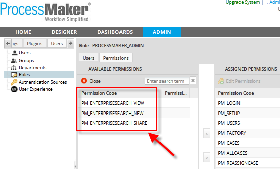
Where:
- PM_ENTERPRISESEARCH_VIEW: This permission allows users to view the plugin options available under HOME tab. Applying this permissions, the possibility to edit a search is also included.
- PM_ENTERPRISESEARCH_NEW: This permission allows users to create new searches.
- PM_ENTERPRISESEARCH_SHARE: This permission allows to share different searches to a particular user.
- PM_OPERATOR: When you share a search for a user or group of users with the Operator role, you must include permission to display All Cases and search cases. This because some users are not directly involved in the case or in the process.
Once the plugin is enabled, under HOME tab the Enterprise Search section, with the following options, will appear:
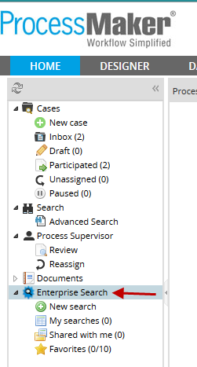
With the following options:
- New Search: Create a new search.
- My Searches: All searches you did will be stored in this folder.
- Shared with me: All searches shared with you will be stored in this folder.
- Favorites: Ability to save some searches as favorites.
Those options will be explained in deep in their corresponding section.
Considerations before starting
How to use Search Criteria
- Cases, which have special characters in their data, like - [ ] * \, need to have a backslash / symbol after each character in order to execute the search correctly.
- For numeric fields, it is not possible to search using " * " as search criteria. E.g: (2 * or * 3) applies only to string fields.
- Searching in currency fields, don't use thousand separators (comma [,]), it only accepts decimal separator (point [.]). E.g <122456.229
- In date fields, you must use the complete mask [YYYY-mm-dd]
- It is not possible to search in pmtables, external tables, dbconnections or case notes.
- In percentage type fields do not enter the symbol %.
Search Criteria on:
- text fields, words separated with space, must be enclosed in double quotes. e.g “Marissa Ann”.
- numeric fields, must have the TO word in the middle of the range. E.g [1 TO 1000].
- date fields, must have TO word in the middle of the range. E.g [1980-01-30 TO 1995-10-22].
- Dropdown Fields, you must use the field label in order to have the correct search.
- Suggest Fields, you must use the field label in order to have the correct search.
- Yes/No fields, you must use 1 for Yes and O for No
- email fields, you must use double quotes " ". E.g user@info.com
Unsupported Fields
- Grid fields
- Login
- Password
- Button
- Reset
- Listbox
- Checkgroup
- Currency: (it will be solved in ProcessMaker version 2.5.2)
Supported Fields
How to Create a Master Form
A master form is a custom Dynaform which can be created using specific fields from the process, this is very useful when you need to have that custom dynaform show inside the Summary option. Basically, the user can create his own dynaform and select which fields will be visible in the search. It reuses the ProcessMaker Summary concept.
You can create this Dynaform using the same XML definition from your Dynaforms created in the process you are working on, so based on them you create a Dynaform named "Costumer Credit Information", so for one dynaform you extract the following fields Customer First Name Name Customer Last Name and from another dynaform Evaluation comments and Amount of Credit required, this Dynaform looks like:

Then, open your process and right click over the Process Map, click on Edit Process and then on Dynaform to show a case summary option select the new Dynaform you've created:
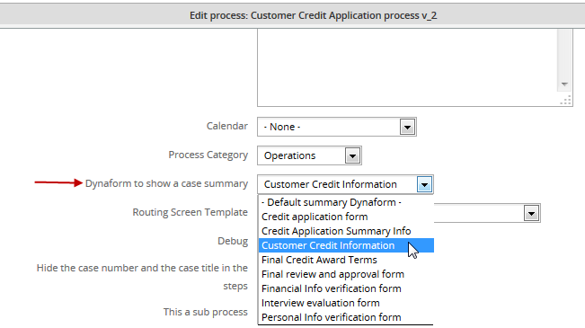
Then, when you create your searches you will have listed the dynaform with an asterisk * before the name.
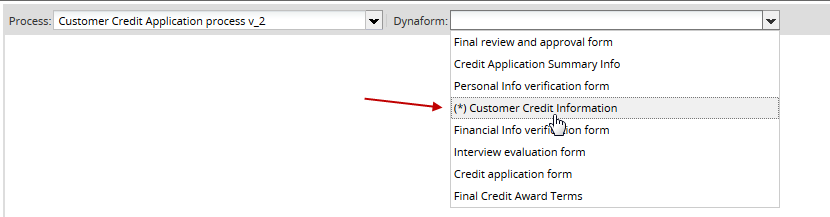
It means that the dynaform has been defined as master dynaform, if you select it, the custom dyanform you've created will display to do the corresponding search:

Then, do the corresponding search, when the results will list, click on the Summary icon and go to More information, the custom dynaform with the information filled will display:

Creating a new search
As it was mentioned before, searches are based on information filled in processes, those searches can be performed by selecting the processes and then its corresponding Dynaform.
To create a new search, go to HOME tab and then click on New Search option, processes created in the current workspace with their corresponding dynaforms will appear:

Where:
- Process: Select a process from the list provided. Once a process is selected, the Dynaform field will be enabled.
- Dynaform: Select a dynaform, they will list according to the process selected previously.
For instance, if the Customer Credit Card Application process is created all its corresponding dynaforms will display, check the image below:
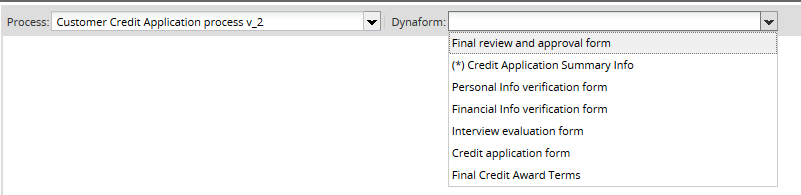
As you can see a dyanform has an asterisk (*) before its name, that means that you have a Master Form defined, and it is possible to make a custom search in this form.
Once the process and dynaform has been selected, the dynaform will display as follows:
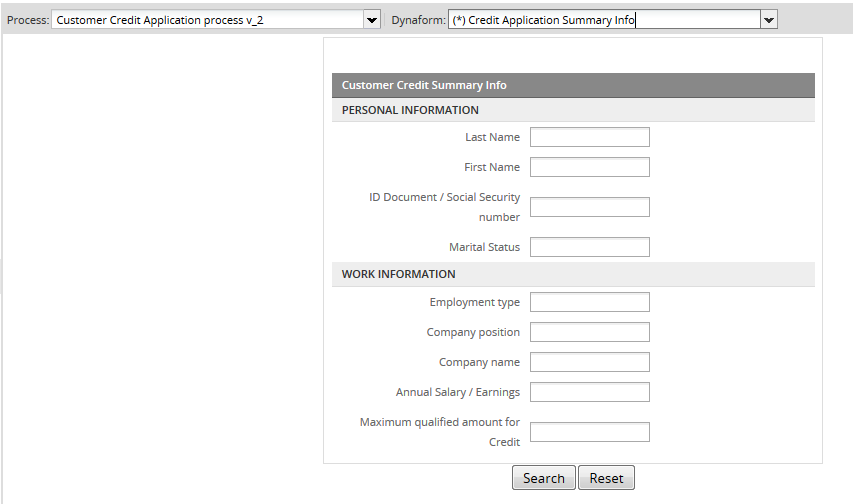
Basically, you have the possibility to search using any field from the dynaform, for instance, if you need to search the name of the employee, let's enter his name and last name and then click over Search button, and then the cases where that person has a participation will display on the list.
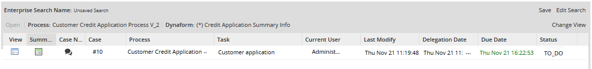
On the other hand, if you want to refill the dynaform with other values click on Reset button to clean all the dynaform values.
How to use search criteria?
In the upper right corner, there is an Information icon, this helps you to know which search criteria can be used. Click on this button and automatically a popup with search criteria tips will open:

Search Criteria Examples
| 1st Search | 2nd Search | 3rd Search | 4th search | 5th search | |
|---|---|---|---|---|---|
| Search criteria for text field | |||||
| Enterprise Edition | Ent* | E*t | *tion | \”enterprise edition\” | -- |
| test@gmail.com | test@gm* | test@gmail.com | *.com | tes*com | - |
| Search criteria for Currency field | |||||
| <, >m <=, >= | |||||
| Use only decimal separator | |<122456.229 | >=123456.334 | <=123456300 | [122456 TO 124456] | |
| Search criteria for Date fields | |||||
| [YYYY-mm-dd] , [YYYY-mm-dd TO YYYY-mm-dd] | |||||
| 2012-05-02 | [2012-05-02] | - | - | - | - |
| 2012-05-02, 2012-10-02 | [2012-05-02 TO 2012-10-02] | - | - | - | - |
Saving Searches
It is possible to save searches, this helps when you have to execute the same search frequently. Once you've executed the search click on Save Search on the right side of the interface:
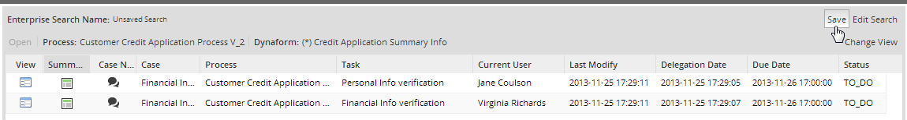
Note: As you can see in the above image, name of the search will appear as Unsaved Search until a name will be defined.
The following window will display:
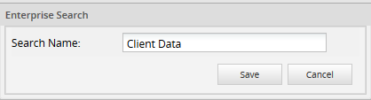
Give the name a search, it is recommended to name your searches according to the results you will obtain, for instance if your search was about obtaining the client data, search will be stored as Client Data.
Have the following considerations:
- User must give a name to the search.
- It is not accepted empty names.
- It is not possible to use HTML tags.
- Saved searches are by user.
- When a search is saved, it also saves all filters defined in the Dynaform.
Your search saved will be stored inside My searches folder:

You have to take a look at the number in parenthesis, it must increased in one, each time a search is saved.
Editing Searches
If searches need to be edited, the user can click over Edit Search button, the dynaform will display so the criteria can be edited.
Changing Views
Views can help you to show and change the view of the results obtained. Click on Change View option, on the upper right side:
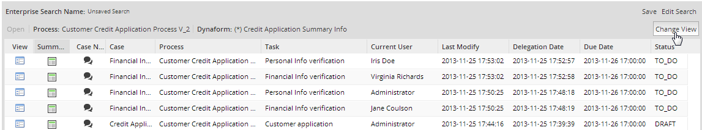
In a view mode, the Dynaform will display with different options numbered in the picture below:
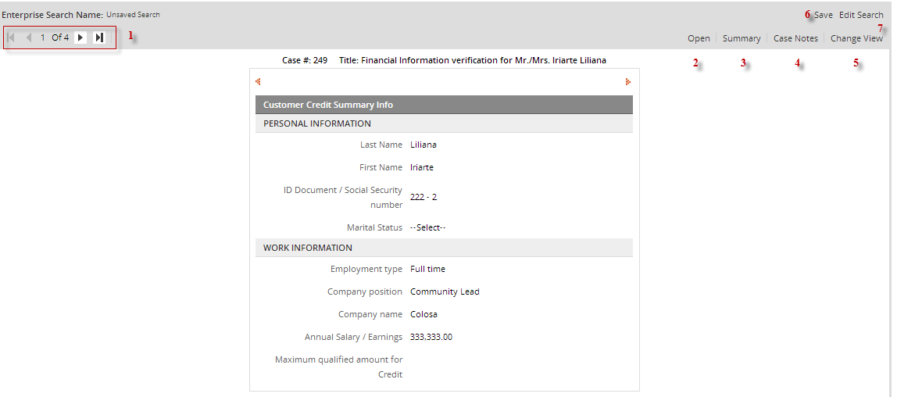
- 1. Navigation Bar: it helps to navigate between pages according to the total number of results found. Use the arrows > < to navigate between results
- 2. Open: It is possible to continue your case by selecting one case from the results, click in Open option and the case will open with the information you filled previously, so click in the submit button and your case will derive to the next instance as if you were working from your case list.

- 3. Summary: Clicking on the Summary, users can see the Summary of the search result, where general information about the case is displayed. It reuses same concept for ProcessMaker Summary. Available tabs: General Information, More Information, Uploaded Documents, Generated Documents.

- 4. Cases Notes: Add a case note not only in searches, but also in the case. For instance, if the search was required for a user's supervisor, once the search is done, the results can be notified to that supervisor by adding a case note. Remember that it is only possible to add plain text and some variables to the note. Results from the search must be added manually.
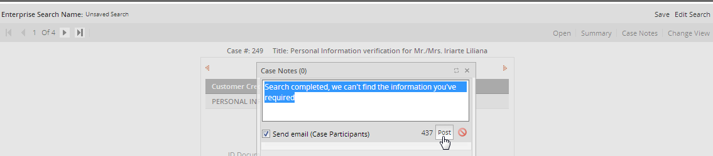
- 5. Change view: It redirects you to the preview view, where the search result list displays.
- 6. Save: It saves your current search.
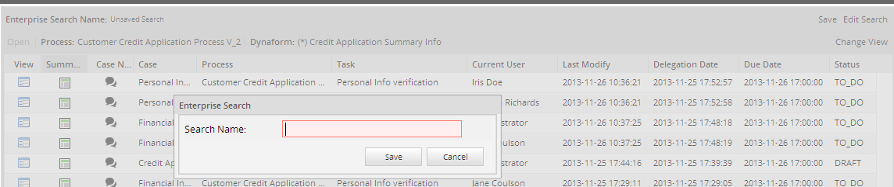
- 7. Edit search: You can edit your current search.
My Searches
It shows a list of all saved searches, you can save as many searches as you need, it doesn't have any limit.

When you click on a search, the buttons on the top will enable:
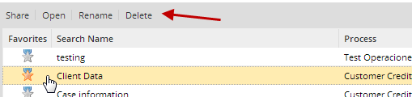
It shares a search with another user or group of PM. To share a search, you must have to create and save it. Click over Share button:
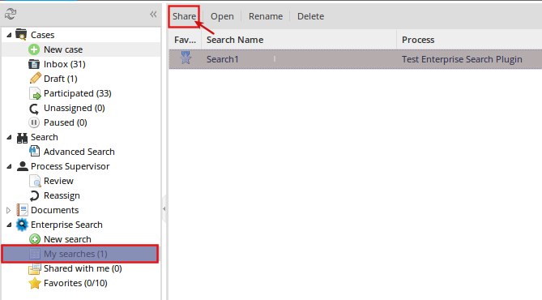
and it will enable the permissions interface:

On the left side, either Groups or Users can be selected, while on the right side select the the permission for that particular group or user. To assign permissions, select who will have access, then the permission and click on Add button. It is possible to assign permissions to many groups or users:
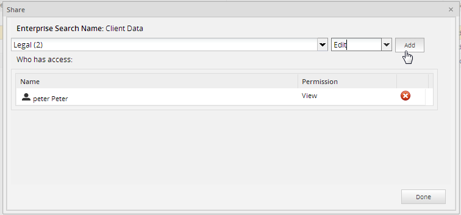
Users may have the rights to see searches, depending on the permissions you set
- View: It will only give users a view permission, so it is not possible to edit searches or view case information. Using the above example, we have Peter with a view permission set, if we login to ProcessMaker with that user, we will have the following view:
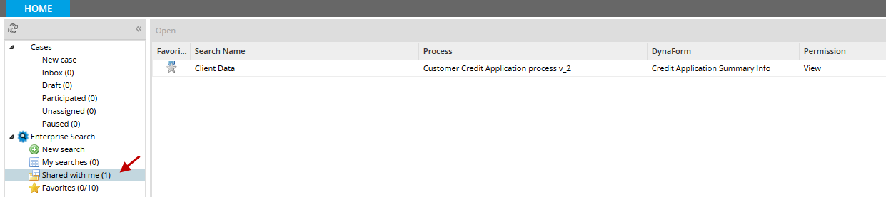
- By accessing to Shared with me all searches shared with that particular user will display, in the case of the example only one search was shared:
- 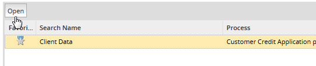
- Select the search and click over the Open button, if the user doesn't have the correct permissions or if he doesn't have a participation in the case, the following message will appear:

- Note You must apply Process Permissions or give the user an edit permission (check the next permission) to see the case information.
- Edit: It will give users permission to edit searches.
All shared searches will be stored inside this folder, by accessing it user will see the following list:
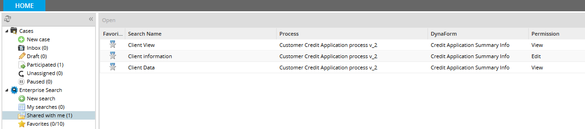
Basically, depending on the permission set for that particular user, information of the search can be seen.
It is possible to set your search as favorite, this will be helpful if you want to keep some specific information about the search. Click on the Star icon to keep the search as favorite. The gray star will turn into yellow, that means your search was added as favorite successfully; if you want to remove it from the favorites click over the Star icon if it turns into grey you, it means your search was removed from favorites folder. All favorite searches will store inside Favorite folder. Finally, the number next to Favorite folder must increase in one:
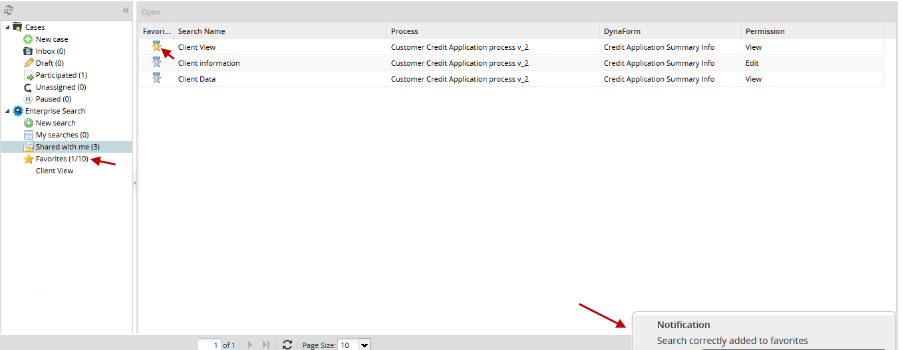
Favorites
Searches can be saved as favorites, it means that if you have any results you want to keep for further reference, you have to save your searches, as it was explained on the Shared with me section, all searches saved as favorites will be stored on this folder, keep in mind that only a maximum of 10 searches can be saved as favorites. By clicking on Favorites folder, searches will list one below another:
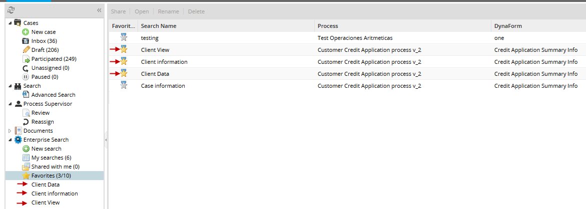